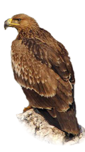

-

Степной орёл — хищная птица из семейства ястребиных.Согласно последним научным данным и анализам ДНК, в Африке и Индии постоянно обитает другой, внешне похожий на степного орла, вид — каменный орёл. Ранее эти виды таксономически не разделялись некоторыми учёными.Общая длина 60—85 см, длина крыла 51—65 см, размах крыльев 220—230 см, вес птиц 2,7—4,8 кг. Самки крупнее самцов Окраска взрослых птиц (четырёхлетних и старше) тёмно-бурая, часто с рыжеватым пятном на затылке, с чёрно-бурыми первостепенными маховыми, где на основании внутренних опахал имеются серо-бурые пестрины; рулевые перья тёмно-бурые с серыми поперечными полосами. Радужина орехово-бурая, клюв серовато-черноватый, когти черные, восковица и ноги жёлтые. В первом годовом наряде молодые птицы бледно-буровато-охристые с охристыми пестринами и надхвостьем; рулевые перья бурые с охристыми каймами
-

Большой подорлик имеет длину тела 65—73 см и массу тела 1,6—3,2 кг. Половой диморфизм не выражен, самки крупнее самцов. Редко встречается светлая форма. Экология вида изучена недостаточно. Большой подорлик несколько крупнее и темнее своего ближайшего родственника — малого подорлика, но в полевых условиях эти виды практически неразличимы. Оперение взрослых птиц (от трёх лет и старше) однотонное, тёмно-бурое, затылок и подхвостье окрашены несколько светлее. Маховые перья черноватые со светлыми основаниями внутренних опахал; рулевые — тёмно-бурые, иногда с черноватым поперечным рисунком. Изредка встречаются особи, у которых основной бурый цвет заменён охристо-желтоватым. У молодых особей оперение со светлыми каплевидными пятнами на верхней стороне тела, встречается также светлая вариация с преобладанием охристо-золотистого тона. В промежуточных нарядах постепенно уменьшается примесь охристых пестрин. Клюв и когти чёрные. Восковица и ноги жёлтые. Ноги оперены до самых пальцев.
-

Моги́льник — орёл, крупная хищная птица семейства ястребиных. Гнездится в степной и лесостепной полосе Евразии к востоку до Байкала и центральных районов Китая. Населяет открытые пространства с островками леса или отдельно стоящими высокими деревьями. Охотится на среднего размера дичь — сусликов, песчанок, сурков, небольших зайцев, некоторых некрупных птиц.Популяция с Пиренейского полуострова, которую ранее традиционно рассматривали в качестве одного из подвидов могильника, в настоящее время обычно выделяется в самостоятельный вид испанский могильник. Имеет сходство с беркутом, отличаясь от него меньшими размерами, более тёмной общей окраской оперения и светлой, желтоватого цвета головой.